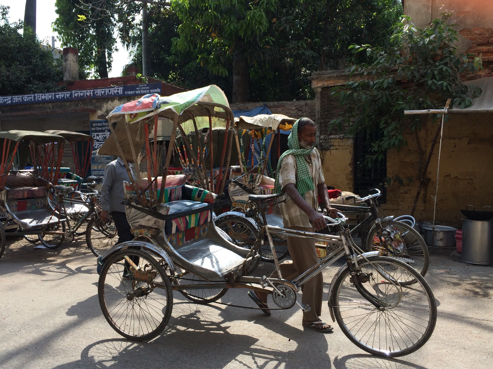
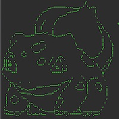

Ruby Projects

Ride Share (Mar 2017)
Ride Share is a Ruby project that reads from CSV files to get information collected from a fictional ride share company and creates Trip, Driver, and Rider objects based on that information. You can call methods on a Trip object to look up the Driver or Rider attached to that Trip, calculate the average rating of a Driver, find out how many Trips a Rider has taken, and more!

Scrabble (Mar 2017)
Scrabble is a collaborative Ruby project that builds pieces of code that could eventually fit into a game of Scrabble. It was a practice in test driven design (using minitest) and collaborating with a partner through GitHub. The Scrabble classes are Scoring, Player, and TileBag, which all interact with each other. A Player can draw from a TileBag and play words, which will be scored using Scoring.
Bank Accounts (Feb 2017)
BankAccounts is a Ruby project built to practice writing classes that interact with each other. It was also used as an introduction to test drive design, using minitest. This project revolves around an Account class that pulls data from a CSV file to create Account objects. Each Account can be linked to an Owner object, as well. Also included are subclasses of Account: SavingsAccount, CheckingAccount, and MoneyMarketAccount.

Word Guess (Feb 2017)
Word Guess is a project built with a partner to practice Ruby classes and pair programming. It's terminal game similar to hangman, but Pokémon themed. Guess letters to reveal secret Pokémon words and evolve your chosen Pokémon companion. Be careful not to guess wrong and kill the Pokémon! Collect badges for fire, water, and grass types. Earn all three badges and become a master trainer! Gotta catch 'em all!
Solar System (Feb 2017)
Solar System is a Ruby project built to practice creating classes in Ruby. It's a terminal program that utilizes a Planet class and SolarSystem class. It asks the user what planet they would like to learn about and then outputs information about that planet. For instance, did you know that Saturn is a gas giant planet that is 72,367 miles in diameter? It's also 795.24 million miles away from Earth. How about that?